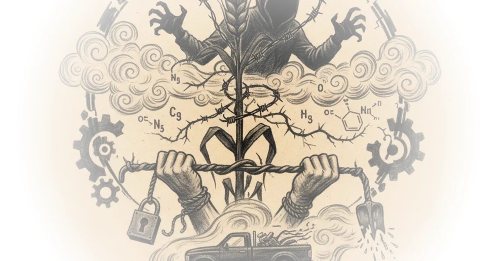

In 1942, a chemist named Franklin D. Jones wanted to kill poison ivy. What he discovered would reshape agriculture worldwide—and spark one of the most controversial chapters in chemical history.
Jones's children had violent reactions to poison ivy—intense rashes and swelling whenever they brushed against the plant. So he experimented with hormones that regulate plant growth, testing dozens of chemicals on different plant species. Most failed. But one day, he noticed something strange: certain samples started showing autumn colors far too early, then twisted and died within days.

The chemical responsible was 24D—a synthetic growth hormone made of a benzene ring with an acid tail. Two chlorine atoms at the two and four positions gave the compound its name. Jones realized he'd found something remarkable: tiny amounts encouraged growth, but large doses triggered such uncontrollable growth that the plants died. It was, in effect, plant cancer in a bottle.
Even more remarkably, 24D only targeted broadleaf weeds like dandelions and poison ivy. Crops like wheat, corn, and barley were virtually unaffected because they are species of grass. By adding another chlorine to create 245T, Jones made the selectivity even sharper—grass crops remained unharmed while weeds died.
By the late 1940s, the herbicide business had become a roughly $10 million industry. Everyone wanted in, including one of the biggest chemical companies at the time: Monsanto.
The Poisonous Factory
One of Monsanto's main herbicide factories sat in Nitro, West Virginia. By 1949, business was booming until the plant exploded. Over 100 workers rushed outside to see a dark cloud rising above the factory. A black powder rained down on their faces. Within hours, many fell ill—first headaches and nausea, then their skin erupted with bumps, lesions, and acne so severe that company doctors had to peel off layers of skin to treat them.
The doctors noted something strange: when these men were together in a closed room, there was a strong odor. They wrote that the workers seemed to be "excreting a foreign chemical through their skins." But neither the doctors nor Monsanto knew what was causing it—because 24D and 245T were marketed as very safe.
When the herbicides were first introduced, Jones himself remarked that people had accidentally sprayed or even drunk the chemicals and suffered no ill effects. One doctor even claimed he'd personally taken half a gram of pure 24D daily for three weeks with no problems. It was the 1940s, so people were indeed a bit crazy.
At Nitro, Monsanto analyzed all the other ingredients used to make 245T but couldn't find what was causing their workers' skin eruptions. The conditions stayed the same. Workers were given a choice: keep working with 245T or take the gate—there were hardly any other jobs in town, so most stayed, something inside the factory poisoning them for years.
The Discovery
Eight years after the explosion, in 1957, a German dermatologist named Carl Schultz began treating patients with similar lesions. Many of these patients worked in 245T factories around Hamburg. When Schulz tested the ingredients from the instruction list on rabbit ears in his lab, he got no reactions. This puzzled him.
To make 245T, you start with tetrachlorobenzene—a benzene ring with four chlorine atoms attached. These chlorine atoms are highly electronegative, meaning they want to steal electrons from nearby atoms. The six carbons in the benzene ring share their electrons in fuzzy doughnut-shaped clouds around the ring. If you heat tetrachlorobenzene with sodium hydroxide, one of the negative hydroxide ions forces out a chlorine atom and binds to one of the slightly positively charged carbons, creating trichlorophenol or TCP.
But Schultz wasn't satisfied. He suspected conditions weren't perfect—that something in this process was contaminating the chemical supply. Ideally, transforming tetrachlorobenzene into 245T should happen at 170 degrees Celsius. But if temperature gets any higher—even just a few degrees—there's suddenly enough energy for two molecules of TCP to fuse together, creating dioxin.
Schultz tested TCP contaminated with trace amounts of dioxin by rubbing it into his own skin. He got the same acne as the workers at the Nitro plant.
Once Schultz realized the threat, he immediately contacted all the major chemical producers in Germany. One German company even sent letters to both Monsanto and Dow—the other big herbicide producer in the US—warning them that the acne-causing effects stemmed from pollution through byproducts referring to dioxin. They listed exactly when during the process the contamination happened and what to do to prevent it.
Monsael denied ever receiving these letters. Dow said they somehow misfiled them.
The Vietnam Connection
In 1961, South Vietnam's president faced a losing war against Viet Cong guerrals. He reached out to US allies, asking for help. Soon, planes flew in with thousands of barrels of herbicide. This was Operation Rancher—the US had chosen Agent Orange, a 50/50 split of 24D and 245T supplied by the biggest chemical manufacturers.
The largest supplier by volume was Agent Orange, which ravaged through South Vietnam, destroying 20% of the jungles. Civilians and soldiers on both sides got sprayed with it, mostly by accident. The government assured everyone it was not toxic to humans, animals, or drinking water. But Monsanto and Dow knew otherwise.
During Rancher, they secretly exchanged information on their herbicides. In one letter, Dow acknowledged that dioxin—contaminating 245T for years—was the most toxic compound they'd ever experienced, and even trace amounts caused incapacitating acne.
By 1965, it was obvious both companies understood what kind of threat dioxin posed. Yet there are no records that either Monsanto or Dow ever sent communication to the US government warning them about the threat. Dow's vice president reportedly said if the government learned about this, the whole industry would suffer.
The US sprayed South Vietnam with 72 million liters of Agent Orange, containing just 80 liters of dioxin. Even though that doesn't seem like much, the damage was irreparable. Civilians and soldiers suffered from skin diseases and cancer. Children were born with physical and mental disabilities. By some estimates, as many as three million people suffered from the effects of Agent Orange.
This outraged the public. In 1967, five thousand scientists signed a petition to the president condemning his use of the herbicides.
The Miracle Compound
Monsael was under scrutiny—regulators were catching on to the dioxin contained in 245T. The herbicide was about to be phased out, compromising their bottom line. They needed a miracle and they needed it fast.
Their idea was to replace 245T with a safer herbicide, but after nine years of research, they weren't getting anywhere. All scientists in the agricultural department referred to this new initiative as dead area. One of the last remaining scientists on the project was John E. France.
By early 1970, France was about to give up. But before abandoning the project, he decided to do one final set of experiments—nineteen possible assets that could maybe work as herbicides. He tested the first herbicide: nothing happened. The plant was completely fine and had no activity. Then he tested the second herbicide and applied it to a plant.
It was ten times more powerful than any herbicide the team had ever seen. It made the plants super nasty—disgusting. This miracle compound was glyphosate, with a phosphonic acid group on one end and a carboxyl group on the other, with a nitrogen hydrogen or amino group in between.
France and his colleagues set up tests in outdoor fields to ensure it was commercially feasible. As one scientist got back to these test sites from the plane, he saw the results were clear as day—all he could do was write Eureka across the performance report. It was the best herbicide they'd ever seen.
What made it so effective? For plants to survive, they use a chemical pathway—a series of reactions to create three important amino acids, acids without which they die. This process is known as the shikimate pathway because it starts with shikimic acid, named after the Japanese shikimi flower.
During one of these steps, two acids need to transform into a third compound. Glyphosate blocks this transformation—it essentially starves the plant until it dies. But for humans and animals, this pathway doesn't exist in our bodies at all. Glyphosate selectively kills plants while leaving everything else unharmed.
This is the story of how one chemical company knew about deadly contaminants in their products, kept that knowledge secret, and helped spray millions of liters of Agent Orange on civilian populations.
Critics might note that the historical narrative presents a simplified version of complex events. The relationship between corporate decisions and government policy involves many players beyond just Monsanto and Dow—military contractors, international politics, and scientific institutions all played roles in how these chemicals were deployed and regulated. Additionally, the piece frames the discovery of glyphosate as a clean resolution to contamination problems, when in reality, glyphosate itself has become one of the most controversial herbicides in modern farming, with ongoing debates about its health and environmental effects.
Bottom Line
Derek Muller tells a compelling story about corporate negligence, scientific discovery, and wartime chemistry that shaped global agriculture. The strongest part of his argument is how he traces the thread from 1940s herbicide research through Vietnam's Agent Orange catastrophe to today's glyphosate era—showing that the same pattern of chemical contamination and corporate cover-up repeats across decades.
But here's what's missing: Muller frames this as a tale of corporate villainy, yet he's asking us to celebrate a discovery—glyphosate—that has itself become one of the most contentious agricultural chemicals in modern farming. The piece celebrates finding a replacement for contaminated herbicides without acknowledging that glyphosate has sparked its own fierce debate over health and environmental impacts. That's the tension left unresolved—and it's where this story actually gets most interesting.